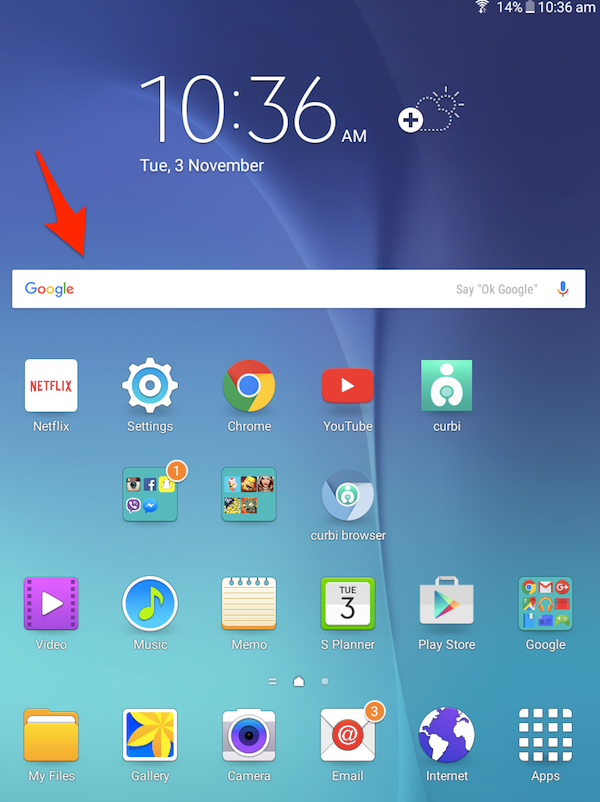
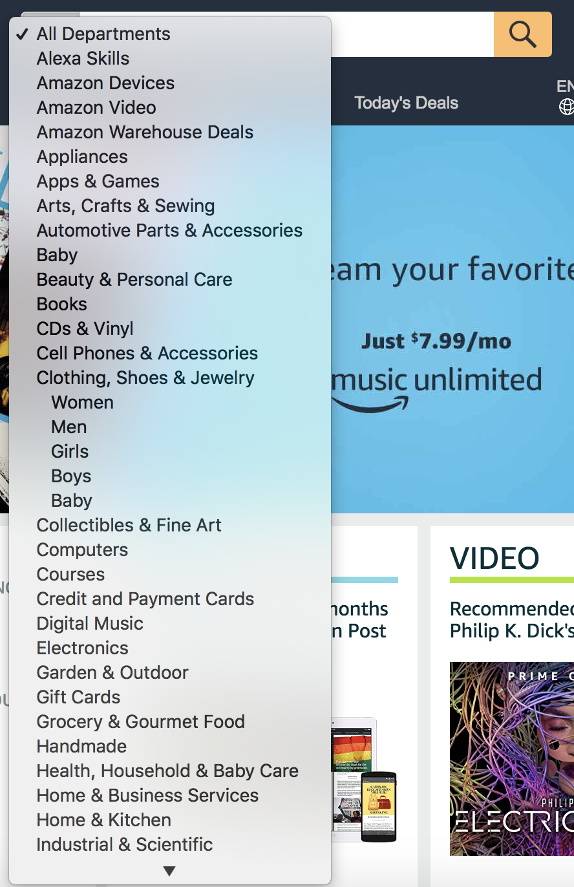
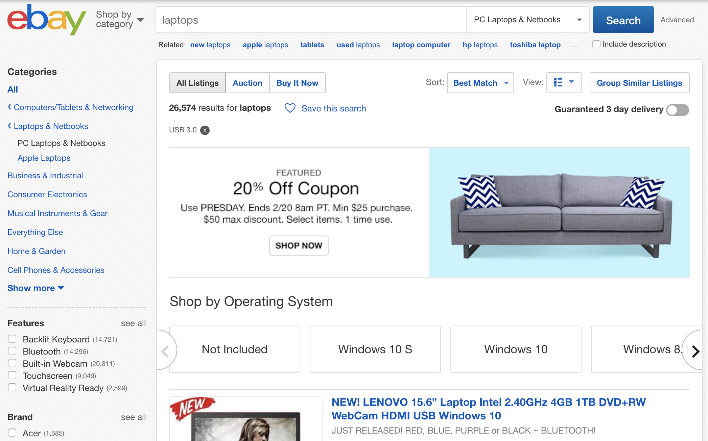
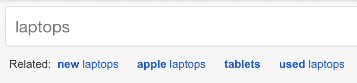
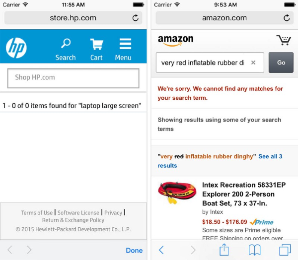
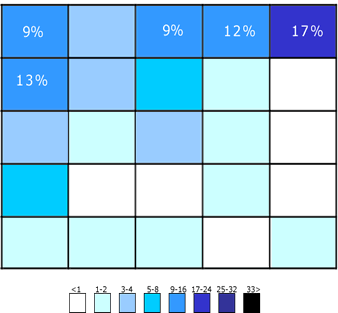

Graphic Design for the Web | 2018 | Federico Pérez Villoro | Isaiah Gernhardt | igernhar@risd.edu
Project 1 –
Digital Archeology
The first search engine created, called Archie, was made to search archives before the first search engines hit the web in 1993.

Nowadays, these are probably the first things that come to mind when you think about a search bar.
Cortana and Siri, from Windows 10 and Apple, feature search functions that use voice, and search both local files and the web.
The search function has become such a daily routine that searchbars have found their way into the home screen of our devices.


Dedicated search engines can also search with images, speech recognition, or even respond with answers to direct questions.
In most modern browsers you can search directly in the navigation bar for futher convenience.

The same integrated search bar appeared in older versions of web browsers. Notice that the search bar is seperate to the navbar, and gives you more control over where you want to search from.
Yahoo’s first versions of their website featured advanced options directly in view of the search bar, unhidden. With the lack of css, they also had the search button be external to the search bar, and an additional clear button. No icons.

Facebook’s first version had a mildly styled search bar. Notice that the text read “go” and it was titled quick search.

Google also had advanced search options right next to the search bar.
 Today search bars are tailored to the site’s content greatly. Take Amazon’s categories tab in the search bar itself, or Ebay’s additional filtration options after you search to increase search productivity.

Many search functions follow with further search suggestions or related categories as to coax you into browsing more.

Even the first versions of Ebay had categories in order to refine your search results, however they were rather unrelated to the search bar.

A popular search bar design choice is to show results as soon as you start typing. Some, like Soundcloud and p5.js, work by using a drop down list, and others, like Netflix, start searching live.

A recent trend in web disign is to have the search bar take over all, or most of the page when clicked. I personally think this is way too distracting and doesn't feel tactile.
In order to avoid translation issues, and to make searching easier on smaller screens, a magnifying glass has been dubbed as the universal search bar symbol. Design styles vary, but it is advised to keep the symbol flat and simple.
In order to accomodate for smaller screen sizes, a collapsing search bar is often used.

Another design guide for search bars is to not put the icon inside the search bar, but make it easy to see and slightly seperate. This is a more flexible suggestion, but on average it makes it easier to spot.

With larger databases or file sizes, a loading animation can be helpful to prevent your visitors from getting bored while waiting for the results.
If a search result comes up with no items, do not display “No results.” Instead suggest ways to find similar content.
Most people expect to find a search bar on the top right side of the screen.
DO NOT use an embedded search box for your websites. Have your own personal search function.
This is a prime example of where NOT to put a search bar. Your search bars should be on every page, not within a tab.